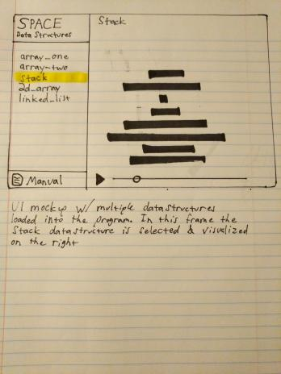

SPACE Data Structure Visualizer
This project will help students in the Data Structures and Algorithms class at SUNY Poly.
Installation
git clone https://github.com/giardim/SPACE
Or
- Click the green button labeled "Code"
- Click download zip
- In your file browser right click the zip file
- Extract it
Usage
- Copy the space.hpp file into your project directory (do not move or delete any other files in the extracted folder)
- Open the index.html file with a web browser
- Click the manual button on the browser app to view detailed instructions on using SPACE
Design
This chapter contains the design documents for the SPACE program.
UI/UX

Overview
The general layout of our application is a main visualization area on the right with a sidebar on the left.
Functionality
The user may drag a data.json file from their file explorer into the webpage. The data structures saved in the data.json file will populate the side bar. To visualize a data structure, click one of the elements in the side bar. This will fill the visualization pane with a view of that data structure.
The visualization pane
Hover your mouse over an element to see its value. Use the media controls at the bottom to play/pause automatic iteration through the save states of your structure. Use the bar to scrub through the save states of your structure.
The side bar
The sidebar contains a list of all data structures present in the data.json file. Clicking on one will open it in the visualization pane. Only one data structure may be visualized at a time. You can open the SPACE manual by clicking the button at the bottom of the side bar.
About the save file
Each datastructure is an object.
They main key for each object will be what the students variable name for that datastructure is e.g. pos_int[] is saved into the JSON file as an object with the name pos_int.
Each object will have a type key and data key. The type key defines what type of datastructure the object is. The data key contains the contents of that datastructure. Every time a datastructure is saved, the contents of the datastructure are saved as an array in its JSON object. If multiple saves of the same datastructure occur, each datastructure save array is appened to the data key.
Example
{
"array": {
"type": "Array1D",
"data": [
[23,16,62,56,31,49,22],
[16,23,62,56,31,49,22],
[16,23,56,62,31,49,22],
[16,23,56,31,62,49,22],
[16,23,56,31,49,62,22],
[16,23,56,31,49,22,62],
[16,23,31,56,49,22,62],
[16,23,31,49,56,22,62],
[16,23,31,49,22,56,62],
[16,23,31,22,49,56,62],
[16,23,22,31,49,56,62],
[16,22,23,31,49,56,62]
]
}
}
Functions
SPACE.hpp contains two main functions. The space::sout() function is used by the student in their programs to output their data structures into a data.json file. The space::save() function is used by the SPACE.hpp program to take the output of space::sout(), convert it to JSON, and output it into a data.json file. The student never uses space::save() in their program.
void space::sout()
Example
int array_size = 3;
int joke[array_size] = [6,7,8,9];
space::sout("joke", joke, array_size);
Description
Stores the data structure to memory AS IS (just like std::cout) If you modify the data structure you must call space::sout() again if you want to save the updated structure. At the end of your program the stored memory will be outout to the data.json file.
Syntax
space::sout(STRING name_of_array, INT array, INT size_of_array);
Parameters
space::sout(
STRING name_of_array, /* if your array is named "joke" pass in "joke" as a string in double quotes */
INT array, /* pass in the array */
INT size_of_array /* pass in the size of the array */
Returns
N/A because space::sout() is a void function.
void space::save()
Example
N/A
Description
A backend funciton that formats the memory stored by space::sout() as JSON and outputs it to the file data.json.
Future design
There is only one save function; space::sout() gets overloaded.
Syntax
N/A
Parameters
N/A
Returns
N/A, it is a void function.